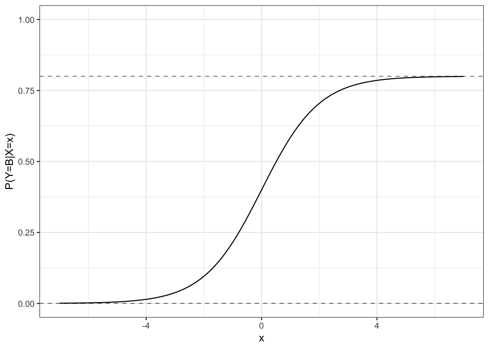

Chapter 7 Introduction to Machine Learning
Caution: in a highly developmental stage! See Section 1.1.
(BAIT 509)
suppressPackageStartupMessages(library(tidyverse))
suppressPackageStartupMessages(library(ISLR))In this section, we’ll go over some basic machine learning concepts.
- Prediction quantity: mean and mode.
- Error measurements
- What is irreducible error?
7.1 What machine learning is
What is Machine Learning (ML) (or Statistical Learning)? As the ISLR book puts it, it’s a “vast set of tools for understanding data”. Before we explain more, we need to consider the two main types of ML:
- Supervised learning. (This is the focus of BAIT 509). Consider a “black box” that accepts some input(s), and returns some type of output. Feed it a variety of input, and write down the output each time (to obtain a data set). Supervised learning attempts to learn from these data to re-construct this black box. That is, it’s a way of building a forecaster/prediction tool.
You’ve already seen examples throughout MBAN. For example, consider trying to predict someone’s wage (output) based on their age (input). Using the Wage data set from the ISLR R package, here are examples of inputs and outputs:
## age wage
## 1 18 75.04315
## 2 24 70.47602
## 3 45 130.98218
## 4 43 154.68529
## 5 50 75.04315
## 6 54 127.11574We try to model the relationship between age and wage so that we can predict the salary of a new individual, given their age.
An example supervised learning technique is linear regression, which you’ve seen before in BABS 507/508. For an age x, let’s use linear regression to make a prediction that’s quadratic in x. Here’s the fit:

The blue curve represents our attempt to “re-construct” the black box by learning from the existing data. So, for a new individual aged 70, we would predict a salary of about $100,000. A 50-year-old, about $125,000.
- Unsupervised learning. (BAIT 509 will not focus on this). Sometimes we can’t see the output of the black box. Unsupervised learning attempts to find structure in the data without any output.
For example, consider the following two gene expression measurements (actually two principal components). Are there groups that we can identify here?

You’ve seen methods for doing this in BABS 507/508, such as k-means.
7.2 Variable terminology
In supervised learning:
- The output is a random variable, typically denoted \(Y\).
- The input(s) variables (which may or may not be random), if there are \(p\) of them, are typically denoted \(X_1\), …, \(X_p\) – or just \(X\) if there’s one.
There are many names for the input and output variables. Here are some (there are more, undoubtedly):
- Output: response, dependent variable.
- Input: predictors, covariates, features, independent variables, explanatory variables, regressors.
In BAIT 509, we will use the terminology predictors and response.
7.2.1 Variable types
Terminology surrounding variable types can be confusing, so it’s worth going over it. Here are some non-technical definitions.
- A numeric variable is one that has a quantity associated with it, such as age or height. Of these, a numeric variable can be one of two things:
- A categorical variable, as the name suggests, is a variable that can be one of many categories. For example, type of fruit; success or failure.
7.3 Types of Supervised Learning
There are two main types of supervised learning methods – determined entirely by the type of response variable.
- Regression is supervised learning when the response is numeric.
- Classification is supervised learning when the response is categorical.
We’ll examine both equally in this course.
Note: Don’t confuse classification with clustering! The latter is an unsupervised learning method.
7.4 Together: Linear Regression Example
Add this exploration to your participation folder on canvas.
Let’s predict Sepal Width of iris species using the iris data set.
- Univariate example.
- Pick a prediction.
- “Calculate” prediction for a new iris plant.
- Evaluate error on the data
- Using species.
- Use species as a predictor.
- Calculate prediction for a new setosa plant.
- Evaluate error on the data. How does it compare to the univariate example?
- Try using all other recorded features.
7.5 Irreducible Error
The concept of irreducible error is paramount to supervised learning. Next time, we’ll look at the concept of reducible error.
When building a supervised learning model (like linear regression), we can never build a perfect forecaster – even if we have infinite data!
Let’s explore this notion. When we hypothetically have an infinite amount of data to train a model with, what we actually have is the probability distribution of \(Y\) given any value of the predictors. The uncertainty in this probability distribution is the irreducible error.
Example: Let’s say \((X,Y)\) follows a (known) bivariate Normal distribution. Then, for any input of \(X\), \(Y\) has a distribution. Here are some examples of this distribution for a few values of the predictor variable (these are called conditional distributions, because they’re conditional on observing particular values of the predictors).

This means we cannot know what \(Y\) will be, no matter what! What’s one to do?
- In regression (i.e., when \(Y\) is numeric, as above), the go-to standard is to predict the mean as our best guess.
- We typically measure error with the mean squared error = average of (observed-predicted)^2.
- In classification, the conditional distributions are categorical variables, so the go-to standard is to predict the mode as our best guess (i.e., the category having the highest probability).
- A typical measurement of error is the error rate = proportion of incorrect predictions.
- A more “complete” picture of error is the entropy, or equivalently, the information measure.
In Class Meeting 07, we’ll look at different options besides the mean and the mode.
An important concept is that predictors give us more information about the response, leading to a more certain distribution. In the above example, let’s try to make a prediction when we don’t have knowledge of predictors. Here’s what the distribution of the response looks like:

This is much more uncertain than in the case where we have predictors!
7.6 In-class Exercises: Irreducible Error
NOT REQUIRED FOR PARTICIPATION
7.6.1 Oracle regression
Suppose you have two independent predictors, \(X_1, X_2 \sim N(0,1)\), and the conditional distribution of \(Y\) is \[ Y \mid (X_1=x_1, X_2=x_2) \sim N(5-x_1+2x_2, 1). \] From this, it follows that:
- The conditional distribution of \(Y\) given only \(X_1\) is \[ Y \mid X_1=x_1 \sim N(5-x_1, 5). \]
- The conditional distribution of \(Y\) given only \(X_2\) is \[ Y \mid X_2=x_2 \sim N(5+2x_2, 2). \]
- The (marginal) distribution of \(Y\) (not given any of the predictors) is \[ Y \sim N(5, 6). \]
The following R function generates data from the joint distribution of \((X_1, X_2, Y)\). It takes a single positive integer as an input, representing the sample size, and returns a tibble (a fancy version of a data frame) with columns named x1, x2, and y, corresponding to the random vector \((X_1, X_2, Y)\), with realizations given in the rows.
genreg <- function(n){
x1 <- rnorm(n)
x2 <- rnorm(n)
eps <- rnorm(n)
y <- 5-x1+2*x2+eps
tibble(x1=x1, x2=x2, y=y)
}- Generate data – as much as you’d like.
dat <- genreg(1000)- For now, ignore the \(Y\) values. Use the means from the distributions listed above to predict \(Y\) under four circumstances:
- Using both the values of \(X_1\) and \(X_2\).
- Using only the values of \(X_1\).
- Using only the values of \(X_2\).
- Using neither the values of \(X_1\) nor \(X_2\). (Your predictions in this case will be the same every time – what is that number?)
dat <- mutate(dat,
yhat = FILL_THIS_IN,
yhat1 = FILL_THIS_IN,
yhat2 = FILL_THIS_IN,
yhat12 = FILL_THIS_IN)- Now use the actual outcomes of \(Y\) to calculate the mean squared error (MSE) for each of the four situations.
- Try re-running the simulation with a new batch of data. Do your MSE’s change much? If so, choose a larger sample so that these numbers are more stable.
(mse <- mean((dat$FILL_THIS_IN - dat$y)^2))
(mse1 <- mean((dat$FILL_THIS_IN - dat$y)^2))
(mse2 <- mean((dat$FILL_THIS_IN - dat$y)^2))
(mse12 <- mean((dat$FILL_THIS_IN - dat$y)^2))
knitr::kable(tribble(
~ Case, ~ MSE,
"No predictors", mse,
"Only X1", mse1,
"Only X2", mse2,
"Both X1 and X2", mse12
))- Order the situations from “best forecaster” to “worst forecaster”. Why do we see this order?
7.6.2 Oracle classification
Consider a categorical response that can take on one of three categories: A, B, or C. The conditional probabilities are: \[ P(Y=A \mid X=x) = 0.2, \] \[ P(Y=B \mid X=x) = 0.8/(1+e^{-x}), \]
To help you visualize this, here is a plot of \(P(Y=B \mid X=x)\) vs \(x\) (notice that it is bounded above by 0.8, and below by 0).
ggplot(tibble(x=c(-7, 7)), aes(x)) +
stat_function(fun=function(x) 0.8/(1+exp(-x))) +
ylim(c(0,1)) +
geom_hline(yintercept=c(0,0.8), linetype="dashed", alpha=0.5) +
theme_bw() +
labs(y="P(Y=B|X=x)")
Here’s an R function to generate data for you, where \(X\sim N(0,1)\). As before, it accepts a positive integer as its input, representing the sample size, and returns a tibble with column names x and y corresponding to the predictor and response.
gencla <- function(n) {
x <- rnorm(n)
pB <- 0.8/(1+exp(-x))
y <- map_chr(pB, function(t)
sample(LETTERS[1:3], size=1, replace=TRUE,
prob=c(0.2, t, 1-t-0.2)))
tibble(x=x, y=y)
}- Calculate the probabilities of each category when \(X=1\). What about when \(X=-2\)? With this information, what would you classify \(Y\) as in both cases?
- BONUS: Plot these two conditional distributions.
## X=1:
(pB <- FILL_THIS_IN)
(pA <- FILL_THIS_IN)
(pC <- FILL_THIS_IN)
ggplot(tibble(p=c(pA,pB,pC), y=LETTERS[1:3]), aes(y, p)) +
geom_col() +
theme_bw() +
labs(y="Probabilities", title="X=1")
## X=-2
(pB <- FILL_THIS_IN)
(pA <- FILL_THIS_IN)
(pC <- FILL_THIS_IN)
ggplot(tibble(p=c(pA,pB,pC), y=LETTERS[1:3]), aes(y, p)) +
geom_col() +
theme_bw() +
labs("Probabilities", title="X=-2")- In general, when would you classify \(Y\) as A? B? C?
7.6.3 (BONUS) Random prediction
You might think that, if we know the conditional distribution of \(Y\) given some predictors, why not take a random draw from that distribution as our prediction? After all, this would be simulating nature.
The problem is, this prediction doesn’t do well.
Re-do the regression exercise above (feel free to only do Case 1 to prove the point), but this time, instead of using the mean as a prediction, use a random draw from the conditional distributions. Calculate the MSE. How much worse is it? How does this error compare to the original Case 1-4 errors?
7.6.4 (BONUS) A more non-standard regression
The regression example given above is your perfect, everything-is-linear-and-Normal world. Let’s see an example of a joint distribution of \((X,Y)\) that’s not Normal.
The joint distribution in question can be respresented as follows: \[ Y|X=x \sim \text{Beta}(e^{-x}, 1/x), \] \[ X \sim \text{Exp}(1). \]
Write a formula that gives a prediction of \(Y\) from \(X\) (you might have to look up the formula for the mean of a Beta random variable). Generate data, and evaluate the MSE. Plot the data, and the conditional mean as a function of \(x\) overtop.
7.6.5 (BONUS) Oracle MSE
What statistical quantity does the mean squared error (MSE) reduce to when we know the true distribution of the data? Hint: if each conditional distribution has a certain variance, what then is the MSE?
What is the error rate in the classification setting?